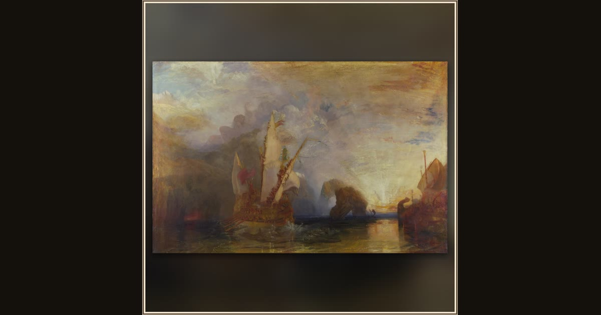

Ulysses deriding Polyphemus – Homer’s Odyssey
Joseph Mallord William Turner · 1829 · The National Gallery · London, England
Turner paints Odysseus sailing off in triumph, lifting the torch he used to blind the Cyclops, whose huge shadowy form stretches across the cliffs behind. Explore its place in Book IX of the Odyssey.